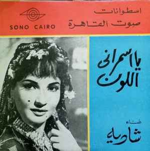

غلاف أسطوانة أغنية "يا أسمراني اللون" من إنتاج شركة صوت القاهرة
صوت بتلاتة تعريفة، وفن بمليون جنيه: هكذا وصف عبد الوهاب صوت شادية، لينضم إلى الكثيرين ممّن انتقدوا صوتها ومحدوديّته. من هؤلاء أيضًا أم كلثوم، والتي على الرغم من تقديرها لشادية، إلا أنها وصفت صوتها بالخفيف وغناءها بأنه أقرب للوشوشة، ليأتي رأيها متّسقًا مع الرأي السائد بأن صوت شادية يلائم الأغاني الخفيفة أو الاستعراضات.
حتى مستمعيها ومعجبوها لم يلتفتوا كثيرًا لتطوّر أداء شادية وما أضافته للغناء العربي.
السياق التاريخي
ولدت فاطمة كامل شاكر في ١٩٢٩، ابنةً لمهندس وأختًا لـ عفاف، التي حاولت دخول عالم الغناء بدون جدوى. رغم رفض الوالد امتهان ابنته عفاف للغناء، إلا أن شادية نجحت في إقناع والدها عن طريق أختها بدعمها ومساعدتها. بالفعل، اصطحبها إلى مسابقة فنيّة لشركة اتحاد الفنانين (التي أسسها المخرج حلمي رفلة ١٩٠٩-١٩٧٨) وأثارت إعجاب اللجنة والذي كان من بينهم المخرج أحمد بدرخان (تقول الأسطورة أنه اصطحب شادية إلى منزل أم كلثوم التي أثنت على صوتها وأدائها).
مثّلت شادية أوّل أدوارها في فيلم أزهار وأشواك العام ١٩٤٧ من إخراج محمد عبد الجواد، ولكي نفهم السياق التاريخي الذي بدأت فيه حياتها الفنيّة، ظهرت شادية في فترة الأربعينيّات، وهو العصر الذهبي للفيلم الغنائي الاستعراضي الذي كانت تحتكره بشكل كبير ليلى مراد (١٩١٨-١٩٩٥) والتي اعتزلت عام ١٩٥٥.
جاءت بداية شادية الحقيقية من خلال أفلامها مع محمد فوزي: صاحبة الملاليم (١٩٤٩) من إخراج عز الدين ذو الفقار، حمامة السلام (١٩٤٨) من إخراج حلمي رفلة، الروح والجسد (١٩٤٨) من إخراج حلمي رفلة، مرسّخًا الشكل الغنائي الاستعراضي الذي ستتبعه شادية طوال فترة الخمسينيّات تقريبًا. إذ يعتبر عقد الخمسينات أغزر العقود من ناحية الإنتاج الفني لشادية، ممثّلةً في أكثر من ٥٠ فيلم في الفترة ما بين (١٩٥٠-١٩٥٤)، ويكاد يكون ذلك هو نصف إجمالي أفلام شادية.
طبيعة الصوت (Timbre) وعلاقته بالأداء
حسب التصنيف الغربي للأصوات النسائيّة، يعتبر صوت شادية الرفيع سوبرانو، والذي يتّسم بخفّة تلائم الأغاني الاستعراضية، أو التي لا تتطلب كثير من الزخرفة الغنائيّة أو المدى الصوتي المتّسع. حتّى أنّه تم توصيفه بأنه صوت مرح، مبهج يغلب عليه الأداء أكثر من الطرب.
ما نريد أن نثير النقاش حوله هنا هو قصور فكرة مثل التقسيم الصوتي (رفيع –غليظ) أو سرد خصائص الصوت (خفيف – ثقيل)، وأنّه من الأحرى استخدام مفهوم مثل timbre والذي يفتح آفاقًا أكبر لفهم قدرة المؤدية أو المغنية في تجاوز مفهوم مثل الحدة أو الغلظة.
فعلى سبيل المثال نغمة دو ممكن لعبها على البيانو أو الناي وسوف يستقبلها المستمع على أنها صوت مختلف على الرغم من أنها عمليًا نفس النغمة. وهذا ما ينطبق على صوت الإنسان، إذ يمكن إصدار نفس النغمات ولكن مع تغيير طريقة إصدارها (وهنا يجب علينا الأخذ في الاعتبار كيفية إصدار الصوت في حد ذاته) من خلال التحكم في متغييرات إصدار الصوت.
ومن خلال فكرة تغيير خصائص الصوت – تامبر، يمكن اعتبار صوت شادية من أكثر النماذج المثيرة للدراسة، لقدرتها الاستثنائيّة على إعادة تشكيل صوتها دون تغييره بشكل حقيقيّ، إذ ظلت صوتها سوبرانو حتى وقت اعتزالها الغناء ١٩٨٤، الأمر الذي يتضح من خلال تتبع التسلسل الزمني لمسيرتها الغنائية.
الخمسينيّات وأسطورة الدلوعة
يكاد ينحصر نوع وأسلوب غناء شادية منذ ظهورها حول شراكتها الفنيّة مع منير مراد (أهم من استطاعوا التجديد في الموسيقى العربية حقيقةً وأكثر الموسيقيين قدرة على استحداث الإيقاعات الغربيّة بأشكالها المختلفة في مجمل ما لُحّن)، ومحمود الشريف وبليغ حمدي لاحقًا اللذان مثّلا تيارَين مختلفَين تنقّلت بينهما شادية على مر مسيرتها الفنية.
يظهر ذلك بوضوح في أول لحن ألّفه محمود الشريف لشادية: يا حسن يا خولي الجنينة من فيلم ليلة الحنة (١٩٥٠)، إخراج أنور وجدي. تستعير الأغنية موتيفات شعبية في موسيقاها، رغم توزيعها الحديث، وتصبح المثال الأوضح على نوع الموسيقى التي حاول محمود الشريف صياغته والتي استطاعت شادية، بالرغم من صغر سنها في ذلك الوقت وافتقارها للنضج الأدائي الذي ميّز أغانيها فيما بعد، أن تنقله بشكل مؤثر.
في نفس الفيلم، لحّن لها منير مراد أولى أغانيه واحد اتنين. هنا نرى في أداء شادية وموسيقى منير مراد أصداء ما حاول أن يصنعه عبد الوهاب والقصبجي مع ليلى مراد، وهذا ليس غريبًا مع إخراج أنور وجدي للفيلم.
من يتتبع أعمال شادية في تلك الفترة يرى إشكالية مسمّى مثل دلوعة الشاشة، أو وصفها بأنها الصوت المبهج أو ما شابه. فعلى سبيل المثال، غنّت شادية قل ادعوا الله أن يمسسك ضَرّ من ألحان كمال الطويل، من فيلم اشهدوا يا ناس (١٩٥٣) من إخراج حسن الصيفي، وهي أغنية دينية بالأساس تتضّح فيها عناصر الإنشاد الديني البعيد كل البعد عن الدلع أو الغناء الاستعراضي الخفيف.
حتّى أنّه يمكن وصف أداؤها بالدرامي أو الميلودرامي. بل لاحقًا، أقدمت شادية على خطوة جرئية فنيًا وغنّت لرياض السنباطي أغنية تلات شهور ويومين اتنين من فيلم ليلة من عمري (١٩٥٤) ومن إخراج عاطف سالم.
تتّبع الأغنية شكل الأغنية السنباطية من حيث إيقاعها التقليدي والزخارف الموسيقيّة، حتى تلتبس للوهلة الأولى الأغنية مع مقدمات أغاني أم كلثوم التي لحنها لها السنباطي. لكن، يظهر الاختلاف في استخدام الصوت جليًا بالمقارنة بما غنته شادية لمنير مراد أو أحمد صدقي على سبيل المثال. على الرغم من ذلك، يتملّك صوتها تلك الخصائص الطفولية من استخدام تردد حاد وإيقاع كلام متقطع وغيرها.
التطور والنضج الفني
تستمر شادية في استخدام أدوات الأداء التي عزّزت من تلك الشخصية الشقية المرحة، حتى مع تقديم نماذج في غاية التباين مثل أغاني كمال الطويل والسنباطي، ويمكننا ملاحظة الاختلاف في أداء شادية في نهاية عقد الخمسينيّات على غير ما هو متوقع مع منير مراد، ليلحّن لها إن راح منك يا عين من فيلم ارحم حبي (١٩٥٩)، إخراج حلمي رفلة.
يختتم منير مراد عقد الخمسينيات بـ إن راح منك يا عين، ليبدأ عقد الستينيّات بأغنية يا بهية وخبريني من فيلم لوعة الحب (١٩٦٠)، إخراج صلاح أبو سيف، والتي أبعد ما تكون عن أسلوب منير مراد المعتاد ونوعية الألحان التي عادة ما قدمها لشادية. مثل أغاني محمود الشريف، تستعير الأغنية عناصر من التراث الشعبي، سواءً في إيقاعاتها أو توزيعها (استخدام الناي على سبيل المثال) وحتى موضوعها.
وتسبغ شادية درجةً لا بأس بها من الشجن على صوتها وأدائها، لكن بشكل هادئ، ومرّة أخرى، بدرجة من التحكم في الأداء تعكس حالة الحزن التي يمثّلها اللحن وموضوع الأغنية. يمكن اعتبار آخر ما لحّنه مراد منير في نهاية عقد الخمسينيّات مرحلة انتقالية لشخصيّة شادية الأدائية وأسلوبها في الغناء. فبشكل أو بآخر، نقلت هذه الأغاني، بألحانها ومواضيعها شادية تدريجيًا إلى حيّز آخر من التعبير استجابت هي له بقدر مذهل من التأقلم والقابلية على التغيير.
إعادة التشكيل: بليغ حمدي
توقفت شادية عن الغناء تقريبًا بشكل كامل بعد العام ١٩٦٤، وظلت عازفة عن الغناء حتى عادت لتغني مع بليغ حمدي والأبنودي واللذان كانا يعملان على مشروع إعادة دمج الغناء الشعبي أو الفلكلوري في قوالب موسيقية وشعرية جديدة. بالفعل اقترح بليغ على شادية عام ١٩٦٦ تقديم أغنية آه يا أسمراني اللون مع إعادة كتابة الكلمات وإعادة التوزيع والتلحين.
وإذا قارنّا غناء شادية في آه يا أسمراني اللون بأدائها فيما سبق، فكأننا نستمع إلى مغنية مختلفة تستخدم المدى الأغلظ من صوتها، مع التضحية بشكل كامل تقريبًا بذلك المدى الأوضح والأجمل في صوتها (وهو المدى الحاد–الرفيع)، وتردّد صوتي أطول (ولكنه أغلظ) والذي يمنح الشعور بأن الصوت أقل عذوبة ولكنّه أكثر تأثيرًا من ناحية الإحساس بأن تكرار الكلمات التي يتم غناؤها يتماشى مع موضوع الأغنية بشكل مثالي تقريبًا.
كانت الأغنية نموذجًا لتحوّل لا يمكن لأحد تجاهله أو التقليل من شأنه. إذ واكب انتقال شادية في أدائها كممثلة إلى أدوار أكثر جدية، وخاصة أفلامها المأخوذة عن نصوص نجيب محفوظ، منها أربعة أفلام في الفترة ما بين ١٩٦٢-١٩٦٩ وهي: اللص والكلاب (١٩٦٢) من إخراج كمال الشيخ، زقاق المدق (١٩٦٣) من إخراج حسن الإمام، الطريق (١٩٦٤) من إخراج حسام الدين مصطفى، ميرامار (١٩٦٩) من إخراج كمال الشيخ. فأثبتت أنها تستطيع تقديم أدوار تتجاوز الكوميديا الغنائية أو الاستعراض.
النضج الفني والتنوع
استكملت شادية تلك الشراكة الجديدة مع بليغ بأغنية قولوا لعين الشمس في نفس العام، والتي لا يقل أداؤها فيها دراميّة عن آه يا أسمراني اللون، وفي نفس السياق غنّت أيضا لبليغ الحنة الحنة في العام ١٩٦٧ لترسيخ دورها فيما كان بليغ يحاول أن يفعله، ولتستمر هي في تقديم ذلك الأسلوب من الغناء والتلحين حتى مع آخرين (مع محمد الموجي على سبيل المثال في أغنية غاب القمر يا ابن عمي).
لذلك، يأتي دورها في فيلم شيء من الخوف (١٩٦٩)، من إخراج حسين كمال، كنتيجة منطقية لتراكم هذا الأداء، من ناحية التمثيل في اللص والكلاب (١٩٦٢) ومن ناحية الغناء في آه يا أسمراني اللون. وإلى جانب اعتبار الفيلم أحد كلاسيكيات الميلودراما المصرية، يأتي غناء شادية لأغنية بليغ حمدي ياعيني على الولد ليؤكد على تلك الرابطة بين اعتبار الأداء جزء لا يتجزأ من عناصر التمثيل والغناء.
في نفس الوقت، لم تتوقّف شادية عن الغناء الخفيف أو الاستعراضي، ففي الوقت الذي غنت فيه الحنة الحنة، غنّت أيضًا إيرما لادوس، من تلحين منير مراد أيضًا. ليس الهدف من تحليل المسيرة الفنية لشادية هو نفي صفة مغنية الاستعراض أو طبيعة صوتها (وهو فعلًا صوت خفيف نسبيًا). ولكن هي المقدرة الاستثنائيّة على الخوض في تجربة موسيقيّة من الممكن اعتبارها بعيدة كل البعد عن طبيعة ذلك الصوت أو عن ذلك التراكم من الأفلام الغنائيّة والاستعراض التي طغت على إنتاج شادية الفنية منذ بداياتها حتى نهاية الخمسينيّات.
تجاوز التصنيفات النمطية
استحوذت صورة شادية كمغنية ومؤدية على صورة الممثلة التي اشتهرت في الأفلام الغنائيّة الكوميديّة بصوتها الظريف. حتى لدى الإلمام بتاريخها الفني، تُختزال تجربتها في الأداء كتحوّل إلى الميلودراما في سياق إثبات الذات. ولا يتم النظر إلى السياق الأوسع (آليات الإنتاج في فترة ظهور شادية، الذوق العام، الملحنين الذين عملت معهم وغيرها)، أو عناصر تلك التجربة وما فعلته شادية من إثارة أسئلة حول محدوديّة مفهوم تصنيف الصوت (صوت خفيف في مقابل صوت مطرب)، وعلاقة الصوت بالأداء، والأثر الفعلي والتقني الذي يخلقه كل هذا.
إن تجربة شادية تكشف لنا عن إمكانيات هائلة في إعادة تشكيل الصوت والأداء، وتتحدى المفاهيم التقليدية عن التصنيفات الصوتية. فالصوت ليس مجرد آلة موسيقية ثابتة الخصائص، بل هو أداة تعبيرية قابلة للتطوير والتشكيل بحسب السياق الفني والدرامي المطلوب.
وربما يكون هذا هو الدرس الأهم من مسيرة شادية الفنية: أن الحكم على الأصوات بمعايير ثابتة ومحدودة قد يحرمنا من اكتشاف إمكانيات فنية استثنائية، وأن الفن الحقيقي يكمن في القدرة على تجاوز هذه التصنيفات والوصول إلى آفاق جديدة من التعبير والإبداع.
الهوامش
- يُقصد هنا بالـ Soprano نوع من التصنيف الغربي للأصوات النسائية والذي يشير إلى الأصوات ذات التردد العالي أو الحاد
- Timbre هو مصطلح تقني في علوم الصوت يشير إلى الخصائص الفريدة للصوت التي تميزه عن الأصوات الأخرى
- المقصود هنا هو متغيرات مثل طريقة التنفس، استخدام الحجاب الحاجز، وضعية الفم واللسان
- شادية كانت في العشرين من عمرها تقريباً عندما غنت هذه الأغنية
- أغنية شهيرة لشادية بالإسبانية من فيلم "إيرما لا دولشي"